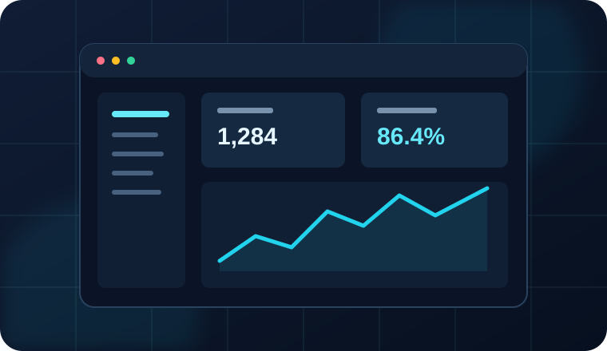
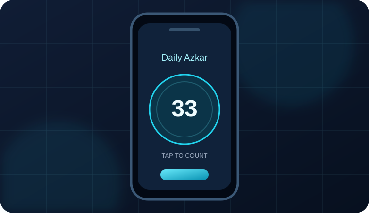
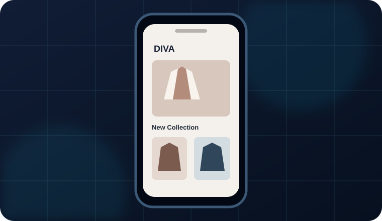
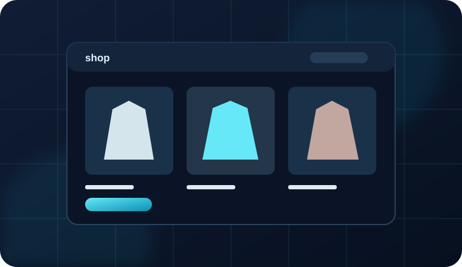
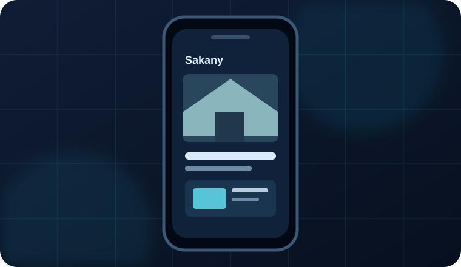
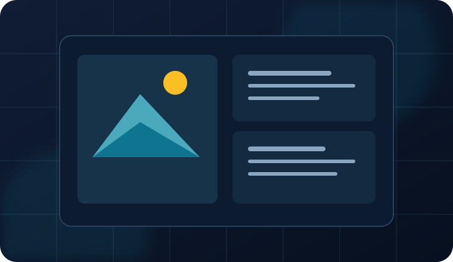

F
01 — MOBILE ENGINEERING
Flutter Development
Building cross-platform Android and iOS applications, structuring features, managing UI state, and connecting mobile experiences to backend services.
Hello, I'm
Flutter & Backend .NET Developer
I build cross-platform mobile experiences and reliable backend services — with a focus on clean architecture, thoughtful details, and maintainable code.
I’m a Software Developer who enjoys turning real business needs into dependable, maintainable software — from mobile experiences to backend services.
I graduated from the Faculty of Computers and Artificial Intelligence at Sohag University. My professional background includes Flutter development on ERP applications, where I worked on cross-platform interfaces, business workflows, API integration, and collaborative delivery.
Alongside my mobile experience, I’m strengthening my Backend .NET skills through hands-on work with C#, ASP.NET Core Web API, SQL Server, EF Core, Dapper, and stored procedures. I’m especially interested in Clean Architecture, SOLID principles, and building software that remains clear and scalable as it grows.
I care about readable code, thoughtful problem-solving, teamwork, and continuous improvement.
View my CV ↗The tools and practices I use to turn requirements into reliable software.
Building cross-platform Android and iOS applications, structuring features, managing UI state, and connecting mobile experiences to backend services.
Developing backend fundamentals and practical API workflows with C#, ASP.NET Core, request handling, validation, and application services.
Working with relational data, SQL querying, stored procedures, and .NET data-access technologies for application workflows.
Applying separation of concerns and established design practices to keep features testable, understandable, and easier to extend.
Using collaborative development tools and disciplined engineering practices throughout implementation, debugging, and delivery.
National Quality Stores Foundation of Information Technology
Hands-on study & implementation
Code Spark Company
To be With Eng. Omar Ahmed
A selection of mobile products and application experiences I've contributed to or built.

↗Cross-platform ERP applications for inventory, sales, and HR workflows, with responsive Flutter UI and REST API integration.

↗A digital rosary with azkar management, counter reset, and local progress storage.

↗A fashion shopping app experience, with a focus on performance and clear product presentation.

↗A shopping platform covering product listings, cart, authentication, and payment processing flows.

↗A responsive real-estate app interface connecting people with realtors for renting or buying apartments.

↗An application concept for exploring home décor ideas and colors and connecting with design companies.
Faculty of Computers and Artificial Intelligence · Sohag University
Graduation project: Deco — Excellent (99%). Overall degree: Very Good with Honors.
I'm always happy to connect about software opportunities, interesting projects, and ideas worth building.
sara101hamdy@gmail.com ↗